9 Cell phenotyping
A common step during single-cell data analysis is the annotation of cells based on their phenotype. Defining cell phenotypes is often subjective and relies on previous biological knowledge. The Orchestrating Single Cell Analysis with Bioconductor book presents a number of approaches to phenotype cells detected by single-cell RNA sequencing based on reference datasets or gene set analysis.
In highly-multiplexed imaging, target proteins or molecules are manually selected based on the biological question at hand. It narrows down the feature space and facilitates the manual annotation of clusters to derive cell phenotypes. We will therefore discuss and compare a number of clustering approaches to group cells based on their similarity in marker expression in Section 9.2.
Unlike single-cell RNA sequencing or CyTOF data, single-cell data derived from highly-multiplexed imaging data often suffers from “lateral spillover” between neighboring cells. This spillover caused by imperfect segmentation often hinders accurate clustering to define specific cell phenotypes in multiplexed imaging data. Tools have been developed to correct lateral spillover between cells (Bai et al. 2021) but the approach requires careful selection of the markers to correct. In Section 9.3 we will train and apply a random forest classifier to classify cell phenotypes in the dataset as alternative approach to clustering-based cell phenotyping. This approach has been previously used to identify major cell phenotypes in metastatic melanoma and avoids clustering of cells (Hoch et al. 2022).
9.1 Load data
We will first read in the previously generated SpatialExperiment object and
sample 2000 cells to visualize cluster membership.
9.2 Clustering approaches
In the first section, we will present clustering approaches to identify cellular phenotypes in the dataset. These methods group cells based on their similarity in marker expression or by their proximity in low dimensional space. A number of approaches have been developed to cluster data derived from single-cell RNA sequencing technologies (Yu et al. 2022) or CyTOF (Weber and Robinson 2016). For demonstration purposes, we will highlight common clustering approaches that are available in R and have been used for clustering cells obtained from IMC. Two approaches rely on graph-based clustering and one approach uses self organizing maps (SOM).
9.2.1 Rphenograph
The PhenoGraph clustering approach was first described to group cells of a CyTOF
dataset (Levine et al. 2015). The algorithm first constructs a graph by detecting the
k nearest neighbours based on euclidean distance in expression space. In the
next step, edges between nodes (cells) are weighted by their overlap in nearest
neighbor sets. To quantify the overlap in shared nearest neighbor sets, the
jaccard index is used. The Louvain modularity optimization approach is used to
detect connected communities and partition the graph into clusters of cells.
This clustering strategy was used by Jackson, Fischer et al. and Schulz et
al. to cluster IMC data (Jackson et al. 2020; Schulz et al. 2018).
There are several different PhenoGraph implementations available in R. Here, we use the one available at https://github.com/i-cyto/Rphenograph. For large datasets, https://github.com/stuchly/Rphenoannoy offers a more performant implementation of the algorithm.
In the following code chunk, we select the asinh-transformed mean pixel
intensities per cell and channel and subset the channels to the ones containing
biological variation. This matrix is transposed to store cells in rows. Within
the Rphenograph function, we select the 45 nearest neighbors for graph
building and louvain community detection (default). The function returns a list
of length 2, the first entry being the graph and the second entry containing the
community object. Calling membership on the community object will return
cluster IDs for each cell. These cluster IDs are then stored within the
colData of the SpatialExperiment object. Cluster IDs are mapped on top of
the UMAP embedding and single-cell marker expression within each cluster are
visualized in form of a heatmap.
It is recommended to test different inputs to k as shown in the next section.
Selecting larger values for k results in larger clusters.
library(Rphenograph)
library(igraph)
library(dittoSeq)
library(viridis)
mat <- t(assay(spe, "exprs")[rowData(spe)$use_channel,])
set.seed(230619)
out <- Rphenograph(mat, k = 45)
clusters <- factor(membership(out[[2]]))
spe$pg_clusters <- clusters
dittoDimPlot(spe, var = "pg_clusters",
reduction.use = "UMAP", size = 0.2,
do.label = TRUE) +
ggtitle("Phenograph clusters on UMAP")
dittoHeatmap(spe[,cur_cells],
genes = rownames(spe)[rowData(spe)$use_channel],
assay = "exprs", scale = "none",
heatmap.colors = viridis(100),
annot.by = c("pg_clusters", "patient_id"),
annot.colors = c(dittoColors(1)[1:length(unique(spe$pg_clusters))],
metadata(spe)$color_vectors$patient_id))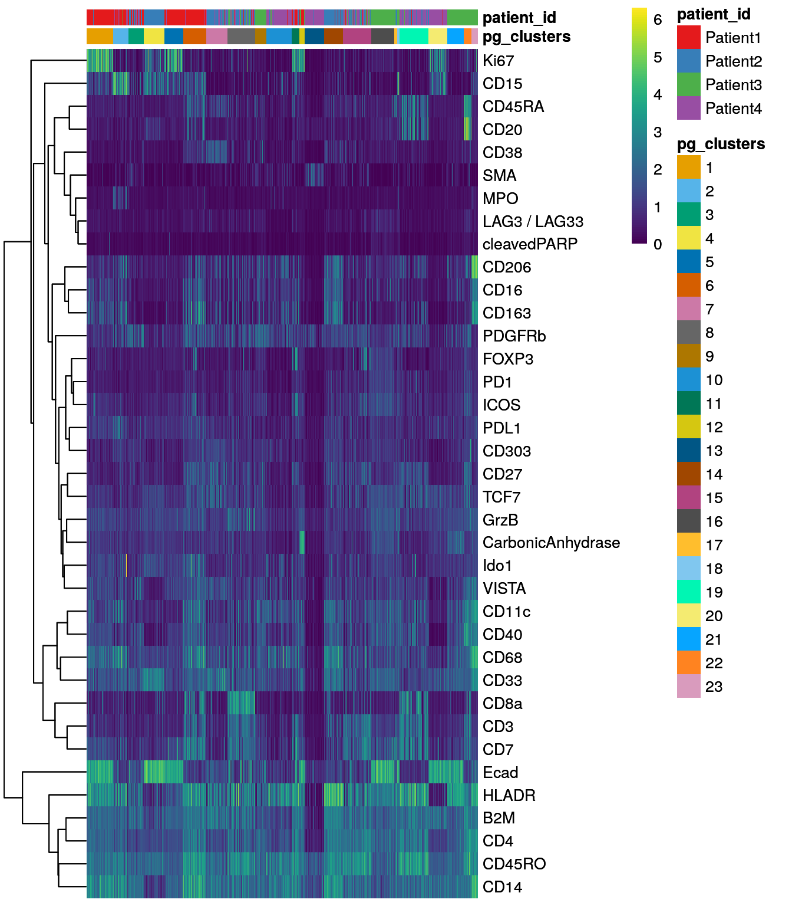
The Rphenograph function call took
1.41 minutes.
We can observe that some of the clusters only contain cells of a single patient.
This can often be observed in the tumor compartment. In the next step, we
use the integrated cells (see Section 8) in low dimensional
embedding for clustering. Here, the low dimensional embedding can
be directly accessed from the reducedDim slot.
mat <- reducedDim(spe, "fastMNN")
set.seed(230619)
out <- Rphenograph(mat, k = 45)
clusters <- factor(membership(out[[2]]))
spe$pg_clusters_corrected <- clusters
dittoDimPlot(spe, var = "pg_clusters_corrected",
reduction.use = "UMAP_mnnCorrected", size = 0.2,
do.label = TRUE) +
ggtitle("Phenograph clusters on UMAP, integrated cells")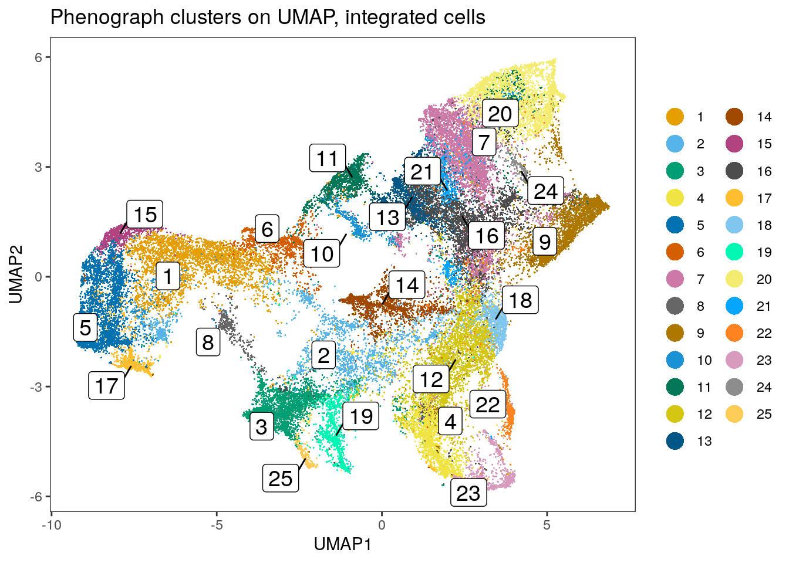
dittoHeatmap(spe[,cur_cells],
genes = rownames(spe)[rowData(spe)$use_channel],
assay = "exprs", scale = "none",
heatmap.colors = viridis(100),
annot.by = c("pg_clusters_corrected","patient_id"),
annot.colors = c(dittoColors(1)[1:length(unique(spe$pg_clusters_corrected))],
metadata(spe)$color_vectors$patient_id))
Clustering using the integrated embedding leads to clusters that contain cells of different patients. Cluster annotation can now be performed by manually labeling cells based on their marker expression (see Notes in Section 9.2.5).
9.2.2 Shared nearest neighbour graph
The bluster package provides a simple interface to cluster cells using a number of different clustering approaches and different metrics to access cluster stability.
For simplicity, we will focus on graph based clustering as this is the most
popular and a fast method for single-cell clustering. The bluster package
provides functionalities to build k-nearest neighbor (KNN) graphs and its weighted
version, shared nearest neighbor (SNN) graphs where nodes represent cells.
The user can chose the number of neighbors to consider (parameter k),
the edge weighting method (parameter type) and the community detection
function to use (parameter cluster.fun). As all parameters affect the clustering
results, the bluster package provides the clusterSweep function to test
a number of parameter settings in parallel. In the following code chunk,
we select the asinh-transformed mean pixel intensities and subset the markers
of interest. The resulting matrix is transposed to fit to the requirements of
the bluster package (cells in rows).
We test two different settings for k, two for type and fix the cluster.fun
to louvain as this is one of the most common approaches for community detection.
This function call is parallelized by setting the BPPARAM parameter.
library(bluster)
library(BiocParallel)
library(ggplot2)
mat <- t(assay(spe, "exprs")[rowData(spe)$use_channel,])
combinations <- clusterSweep(mat,
BLUSPARAM=SNNGraphParam(),
k=c(10L, 20L),
type = c("rank", "jaccard"),
cluster.fun = "louvain",
BPPARAM = MulticoreParam(RNGseed = 220427))We next calculate two metrics to estimate cluster stability: the average silhouette width and the neighborhood purity.
We use the approxSilhouette function to compute the silhouette width for each
cell and compute the average across all cells per parameter setting. Please see
?silhouette for more information on how the silhouette width is computed for
each cell. A large average silhouette width indicates a cluster parameter
setting for which cells that are well clustered.
The neighborPurity function computes the fraction of cells around each cell
with the same cluster ID. Per parameter setting, we compute the average
neighborhood purity across all cells. A large average neighborhood purity
indicates a cluster parameter setting for which cells that are well clustered.
sil <- vapply(as.list(combinations$clusters),
function(x) mean(approxSilhouette(mat, x)$width),
0)
ggplot(data.frame(method = names(sil),
sil = sil)) +
geom_point(aes(method, sil)) +
theme_classic(base_size = 15) +
theme(axis.text.x = element_text(angle = 90, hjust = 1)) +
xlab("Cluster parameter combination") +
ylab("Average silhouette width")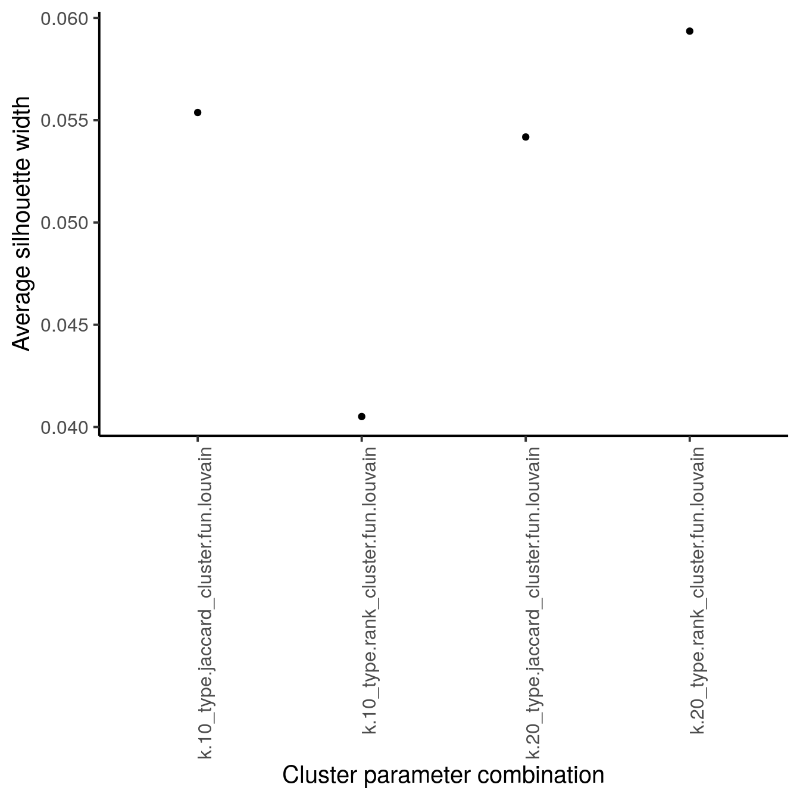
pur <- vapply(as.list(combinations$clusters),
function(x) mean(neighborPurity(mat, x)$purity),
0)
ggplot(data.frame(method = names(pur),
pur = pur)) +
geom_point(aes(method, pur)) +
theme_classic(base_size = 15) +
theme(axis.text.x = element_text(angle = 90, hjust = 1)) +
xlab("Cluster parameter combination") +
ylab("Average neighborhood purity")The cluster parameter sweep took 4.13 minutes.
Performing a cluster sweep takes some time as multiple function calls are run in parallel. We do however recommend testing a number of different parameter settings to assess clustering performance.
Once parameter settings are known, we can either use the clusterRows function
of the bluster package to cluster cells or its convenient wrapper function
exported by the
scran package.
The scran::clusterCells function accepts a SpatialExperiment (or
SingleCellExperiment) object which stores cells in columns. By default, the
function detects the 10 nearest neighbours for each cell, performs rank-based
weighting of edges (see ?makeSNNGraph for more information) and uses the
cluster_walktrap function to detect communities in the graph.
As we can see above, the clustering approach in this dataset with k being 20
and rank-based edge weighting leads to the highest silhouette width and highest
neighborhood purity.
library(scran)
set.seed(220620)
clusters <- clusterCells(spe[rowData(spe)$use_channel,],
assay.type = "exprs",
BLUSPARAM = SNNGraphParam(k=20,
cluster.fun = "louvain",
type = "rank"))
spe$nn_clusters <- clusters
dittoDimPlot(spe, var = "nn_clusters",
reduction.use = "UMAP", size = 0.2,
do.label = TRUE) +
ggtitle("SNN clusters on UMAP")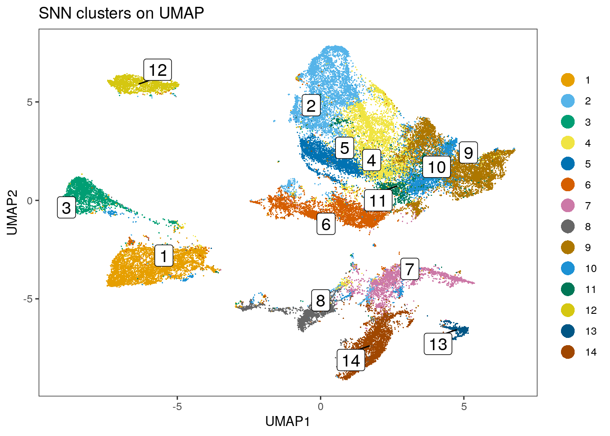
dittoHeatmap(spe[,cur_cells],
genes = rownames(spe)[rowData(spe)$use_channel],
assay = "exprs", scale = "none",
heatmap.colors = viridis(100),
annot.by = c("nn_clusters", "patient_id"),
annot.colors = c(dittoColors(1)[1:length(unique(spe$nn_clusters))],
metadata(spe)$color_vectors$patient_id))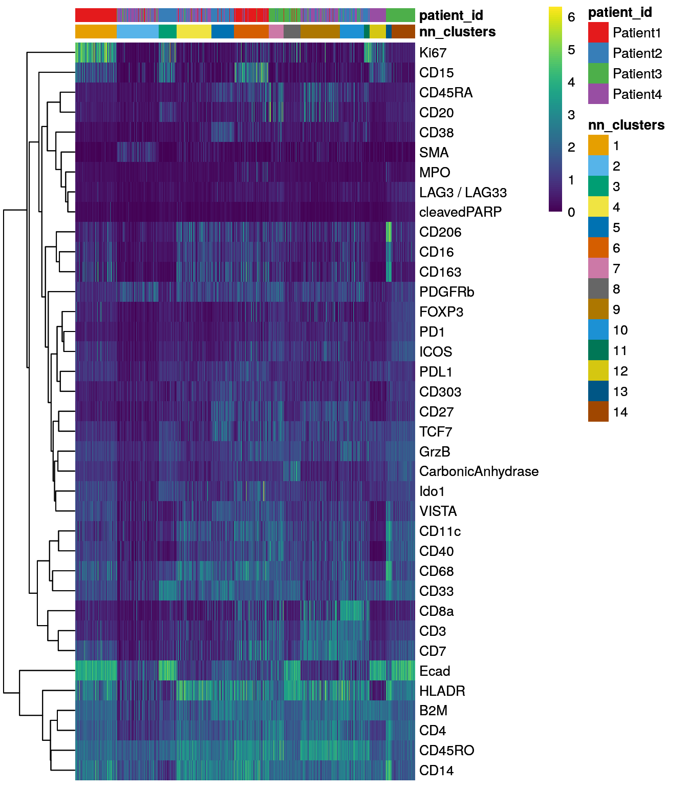
The shared nearest neighbor graph clustering approach took 0.99 minutes.
This function was used by (Tietscher et al. 2022) to cluster cells obtained by IMC. Setting
type = "jaccard" performs clustering similar to Rphenograph above and Seurat.
Similar to the results obtained by Rphenograph, some of the clusters are
patient-specific. We can now perform clustering of the integrated cells
by directly specifying which low-dimensional embedding to use:
set.seed(220621)
clusters <- clusterCells(spe,
use.dimred = "fastMNN",
BLUSPARAM = SNNGraphParam(k = 20,
cluster.fun = "louvain",
type = "rank"))
spe$nn_clusters_corrected <- clusters
dittoDimPlot(spe, var = "nn_clusters_corrected",
reduction.use = "UMAP_mnnCorrected", size = 0.2,
do.label = TRUE) +
ggtitle("SNN clusters on UMAP, integrated cells")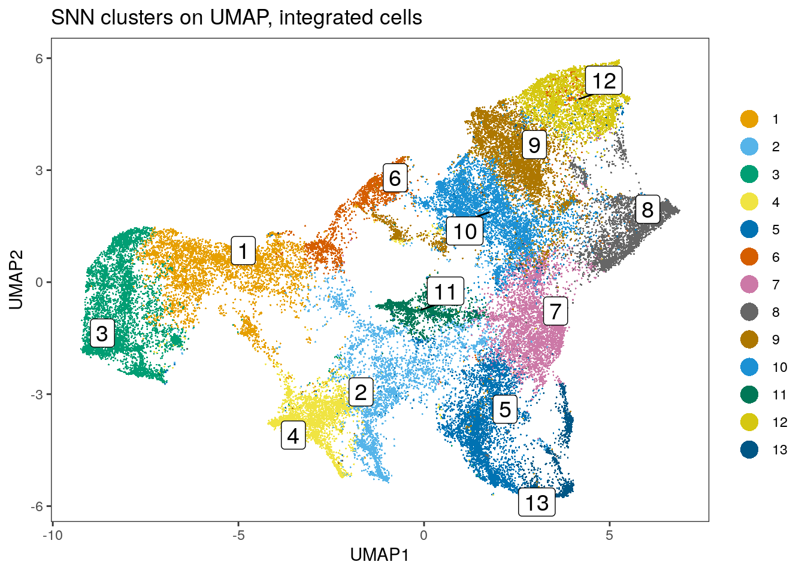
dittoHeatmap(spe[,cur_cells],
genes = rownames(spe)[rowData(spe)$use_channel],
assay = "exprs", scale = "none",
heatmap.colors = viridis(100),
annot.by = c("nn_clusters_corrected","patient_id"),
annot.colors = c(dittoColors(1)[1:length(unique(spe$nn_clusters_corrected))],
metadata(spe)$color_vectors$patient_id))
9.2.3 Self organizing maps
An alternative to graph-based clustering is offered by the
CATALYST
package. The cluster function internally uses the
FlowSOM
package to group cells into 100 (default) clusters based on self organizing maps
(SOM). In the next step, the
ConsensusClusterPlus
package is used to perform hierarchical consensus clustering of the previously
detected 100 SOM nodes into 2 to maxK clusters. Cluster stability for each k
can be assessed by plotting the delta_area(spe). The optimal number
of clusters can be found by selecting the k at which a plateau is reached.
In the example below, an optimal k lies somewhere around 13.
library(CATALYST)
# Run FlowSOM and ConsensusClusterPlus clustering
set.seed(220410)
spe <- cluster(spe,
features = rownames(spe)[rowData(spe)$use_channel],
maxK = 30)
# Assess cluster stability
delta_area(spe)
spe$som_clusters <- cluster_ids(spe, "meta13")
dittoDimPlot(spe, var = "som_clusters",
reduction.use = "UMAP", size = 0.2,
do.label = TRUE) +
ggtitle("SOM clusters on UMAP")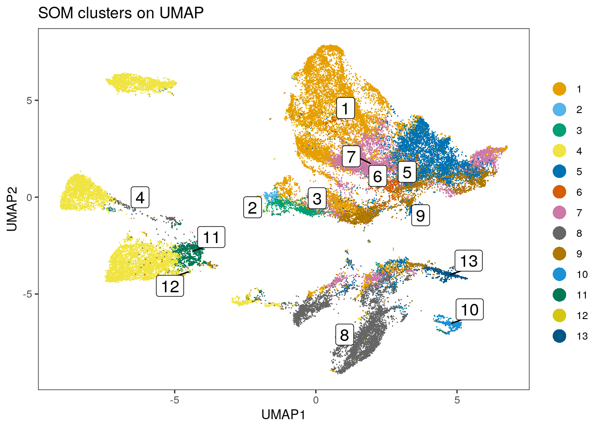
dittoHeatmap(spe[,cur_cells],
genes = rownames(spe)[rowData(spe)$use_channel],
assay = "exprs", scale = "none",
heatmap.colors = viridis(100),
annot.by = c("som_clusters", "patient_id"),
annot.colors = c(dittoColors(1)[1:length(unique(spe$som_clusters))],
metadata(spe)$color_vectors$patient_id))
Running FlowSOM clustering took 0.16 minutes.
The CATALYST package does not provide functionality to perform FlowSOM and
ConsensusClusterPlus clustering directly on the batch-corrected, integrated cells. As an
alternative to the CATALYST package, the bluster package provides SOM
clustering when specifying the SomParam() parameter. Similar to the CATALYST
approach, we will first cluster the dataset into 100 clusters (also called
“codes”). These codes are then further clustered into a maximum of 30 clusters
using ConsensusClusterPlus (using hierarchical clustering and euclidean
distance). The delta area plot can be accessed using the (not exported)
.plot_delta_area function from CATALYST. Here, it seems that the plateau is
reached at a k of 16 and we will store the final cluster IDs within the
SpatialExperiment object.
library(kohonen)
library(ConsensusClusterPlus)
# Select integrated cells
mat <- reducedDim(spe, "fastMNN")
# Perform SOM clustering
set.seed(220410)
som.out <- clusterRows(mat, SomParam(100), full = TRUE)
# Cluster the 100 SOM codes into larger clusters
ccp <- ConsensusClusterPlus(t(som.out$objects$som$codes[[1]]),
maxK = 30,
reps = 100,
distance = "euclidean",
seed = 220410,
plot = NULL)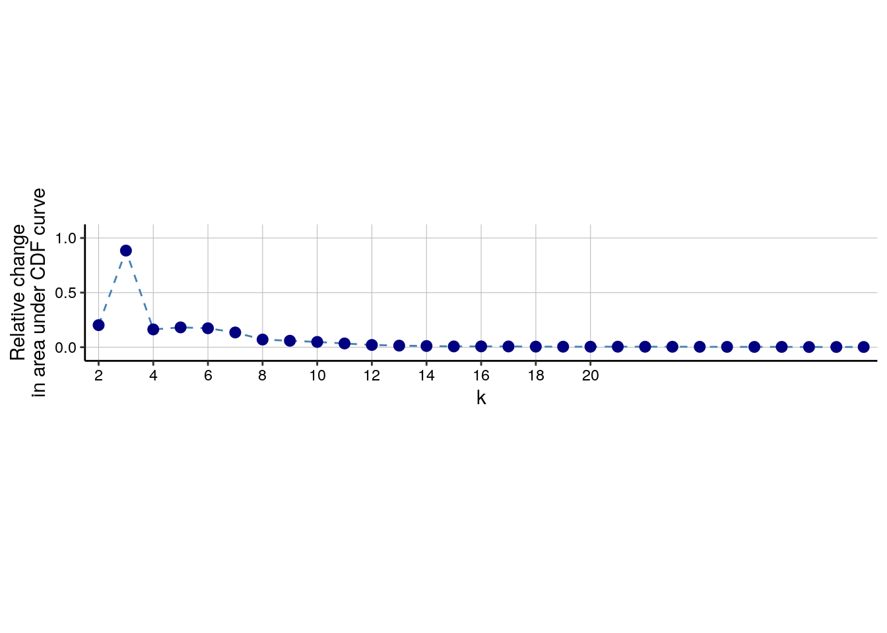
# Link ConsensusClusterPlus clusters with SOM codes and save in object
som.cluster <- ccp[[16]][["consensusClass"]][som.out$clusters]
spe$som_clusters_corrected <- as.factor(som.cluster)
dittoDimPlot(spe, var = "som_clusters_corrected",
reduction.use = "UMAP_mnnCorrected", size = 0.2,
do.label = TRUE) +
ggtitle("SOM clusters on UMAP, integrated cells")
dittoHeatmap(spe[,cur_cells],
genes = rownames(spe)[rowData(spe)$use_channel],
assay = "exprs", scale = "none",
heatmap.colors = viridis(100),
annot.by = c("som_clusters_corrected","patient_id"),
annot.colors = c(dittoColors(1)[1:length(unique(spe$som_clusters_corrected))],
metadata(spe)$color_vectors$patient_id))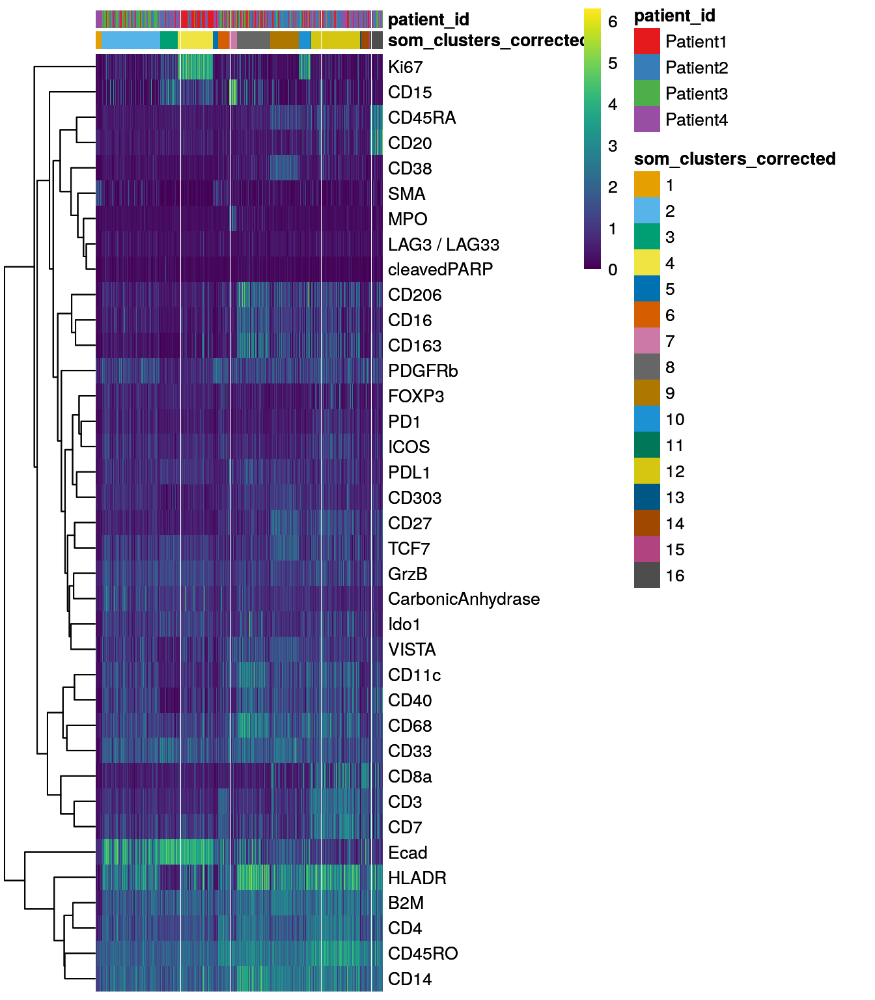
The FlowSOM clustering approach has been used by (Hoch et al. 2022) to sub-cluster tumor
cells as measured by IMC.
9.2.4 Compare between clustering approaches
Finally, we can compare the results of different clustering approaches. For this, we visualize the number of cells that are shared between different clustering results in a pairwise fashion. In the following heatmaps a high match between clustering results can be seen for those clusters that are uniquely detected in both approaches.
First, we will visualize the match between the three different approaches applied to the asinh-transformed counts.
library(patchwork)
library(pheatmap)
library(gridExtra)
tab1 <- table(paste("Rphenograph", spe$pg_clusters),
paste("SNN", spe$nn_clusters))
tab2 <- table(paste("Rphenograph", spe$pg_clusters),
paste("SOM", spe$som_clusters))
tab3 <- table(paste("SNN", spe$nn_clusters),
paste("SOM", spe$som_clusters))
pheatmap(log10(tab1 + 10), color = viridis(100))
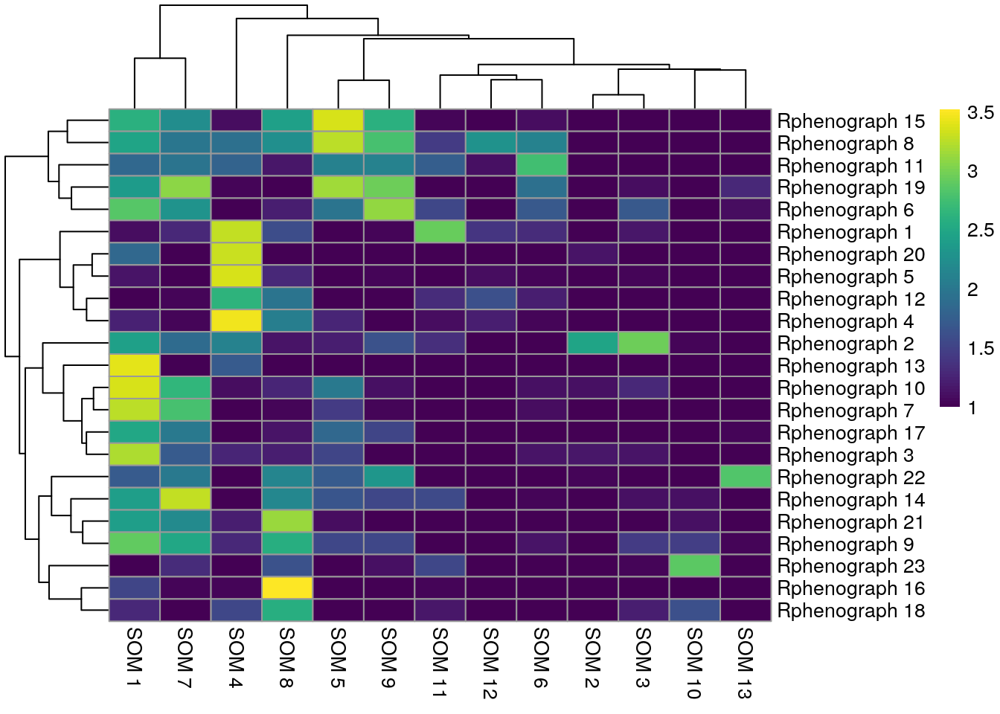

We observe that Rphenograph and the shared nearest neighbor (SNN) approach by
scran show similar results (first heatmap above). For example, Rphenograph
cluster 20 (a tumor cluster) is perfectly captured by SNN cluster 12. On the
other hand, the Neutrophil cluster (SNN cluster 6) is split into Rphenograph
cluster 2 and Rphenograph cluster 6. A common approach
is to now merge clusters that contain similar cell types and annotate them by
hand (see below).
Below, a comparison between the clustering results of the integrated cells is shown.
tab1 <- table(paste("Rphenograph", spe$pg_clusters_corrected),
paste("SNN", spe$nn_clusters_corrected))
tab2 <- table(paste("Rphenograph", spe$pg_clusters_corrected),
paste("SOM", spe$som_clusters_corrected))
tab3 <- table(paste("SNN", spe$nn_clusters_corrected),
paste("SOM", spe$som_clusters_corrected))
pheatmap(log10(tab1 + 10), color = viridis(100))

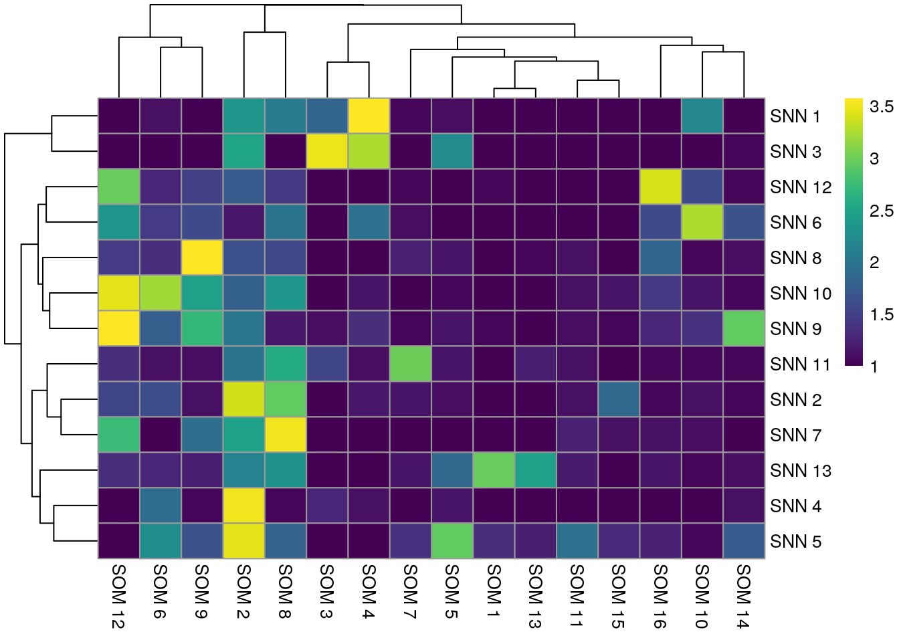
In comparison to clustering on the non-integrated cells, the clustering results of the integrated cells show higher overlap. The SNN approach resulted in fewer clusters and therefore matches better with the SOM clustering approach.
9.2.5 Further clustering notes
The bluster package provides a number of metrics to assess cluster stability
here.
For brevity we only highlighted the use of the silhouette width and the
neighborhood purity but different metrics should be tested to assess cluster
stability.
To assign cell types to clusters, we manually annotate clusters based on their marker expression. For example, SNN cluster 12 (clustering of the integrated cells) shows high, homogeneous expression of CD20 and we might therefore label this cluster as B cells. The next chapter 10 will highlight single-cell visualization methods that can be helpful for manual cluster annotations.
An example how to label clusters can be seen below:
library(dplyr)
cluster_celltype <- recode(spe$nn_clusters_corrected,
"1" = "Tumor_proliferating",
"2" = "Myeloid",
"3" = "Tumor",
"4" = "Tumor",
"5" = "Stroma",
"6" = "Proliferating",
"7" = "Myeloid",
"8" = "Plasma_cell",
"9" = "CD8",
"10" = "CD4",
"11" = "Neutrophil",
"12" = "Bcell",
"13" = "Stroma")
spe$cluster_celltype <- cluster_celltype9.3 Classification approach
In this section, we will highlight a cell type classification approach based on ground truth labeling and random forest classification. The rational for this supervised cell phenotyping approach is to use the information contained in the pre-defined markers to detect cells of interest. This approach was used by Hoch et al. to classify cell types in a metastatic melanoma IMC dataset (Hoch et al. 2022).
The antibody panel used in the example data set mainly focuses on immune cell types and little on tumor cell phenotypes. Therefore we will label the following cell types:
- Tumor (E-cadherin positive)
- Stroma (SMA, PDGFRb positive)
- Plasma cells (CD38 positive)
- Neutrophil (MPO, CD15 positive)
- Myeloid cells (HLADR positive)
- B cells (CD20 positive)
- B next to T cells (CD20, CD3 positive)
- Regulatory T cells (FOXP3 positive)
- CD8+ T cells (CD3, CD8 positive)
- CD4+ T cells (CD3, CD4 positive)
The “B next to T cell” phenotype (BnTcell) is commonly observed in immune
infiltrated regions measured by IMC. We include this phenotype to account for B
cell/T cell interactions where precise classification into B cells or T cells is
not possible. The exact gating scheme can be seen at
img/Gating_scheme.pdf.
As related approaches, Astir and Garnett use pre-defined panel information to classify cell phenotypes based on their marker expression.
9.3.1 Manual labeling of cells
The cytomapper
package provides the cytomapperShiny function that allows gating of cells
based on their marker expression and visualization of selected cells directly
on the images.
library(cytomapper)
if (interactive()) {
images <- readRDS("data/images.rds")
masks <- readRDS("data/masks.rds")
cytomapperShiny(object = spe, mask = masks, image = images,
cell_id = "ObjectNumber", img_id = "sample_id")
}The labeled cells for this data set can be accessed at
10.5281/zenodo.6554544 and were downloaded
in Section 4. Gating is performed per image and the
cytomapperShiny function allows the export of gated cells in form of a
SingleCellExperiment or SpatialExperiment object. The cell label is stored
in colData(object)$cytomapper_CellLabel and the gates are stored in
metadata(object). In the next section, we will read in and consolidate the
labeled data.
9.3.2 Define color vectors
For consistent visualization of cell types, we will now pre-define their colors:
celltype <- setNames(c("#3F1B03", "#F4AD31", "#894F36", "#1C750C", "#EF8ECC",
"#6471E2", "#4DB23B", "grey", "#F4800C", "#BF0A3D", "#066970"),
c("Tumor", "Stroma", "Myeloid", "CD8", "Plasma_cell",
"Treg", "CD4", "undefined", "BnTcell", "Bcell", "Neutrophil"))
metadata(spe)$color_vectors$celltype <- celltype9.3.3 Read in and consolidate labeled data
Here, we will read in the individual SpatialExperiment objects containing the
labeled cells and concatenate them. In the process of concatenating the
SpatialExperiment objects along their columns, the sample_id entry is
appended by .1, .2, .3, ... due to replicated entries.
library(SingleCellExperiment)
label_files <- list.files("data/gated_cells",
full.names = TRUE, pattern = ".rds$")
# Read in SPE objects
spes <- lapply(label_files, readRDS)
# Merge SPE objects
concat_spe <- do.call("cbind", spes)In the following code chunk we will identify cells that were labeled multiple times. This occurs when different cell phenotypes are gated per image and can affect immune cells that are located inside the tumor compartment.
We will first identify those cells that were uniquely labeled. In the next step,
we will identify those cells that were labeled twice AND were labeled as Tumor
cells. These cells will be assigned their immune cell label. Finally, we will
save the unique labels within the original SpatialExperiment object.
Of note: this concatenation strategy is specific for cell phenotypes contained in this example dataset. The gated cell labels might need to be processed in a slightly different way when working with other samples.
For these tasks, we will define a filter function:
filter_labels <- function(object,
label = "cytomapper_CellLabel") {
cur_tab <- unclass(table(colnames(object), object[[label]]))
cur_labels <- colnames(cur_tab)[apply(cur_tab, 1, which.max)]
names(cur_labels) <- rownames(cur_tab)
cur_labels <- cur_labels[rowSums(cur_tab) == 1]
return(cur_labels)
}This function is now applied to all cells and then only non-tumor cells.
labels <- filter_labels(concat_spe)
cur_spe <- concat_spe[,concat_spe$cytomapper_CellLabel != "Tumor"]
non_tumor_labels <- filter_labels(cur_spe)
additional_cells <- setdiff(names(non_tumor_labels), names(labels))
final_labels <- c(labels, non_tumor_labels[additional_cells])
# Transfer labels to SPE object
spe_labels <- rep("unlabeled", ncol(spe))
names(spe_labels) <- colnames(spe)
spe_labels[names(final_labels)] <- final_labels
spe$cell_labels <- spe_labels
# Number of cells labeled per patient
table(spe$cell_labels, spe$patient_id)##
## Patient1 Patient2 Patient3 Patient4
## Bcell 152 131 234 263
## BnTcell 396 37 240 1029
## CD4 45 342 167 134
## CD8 60 497 137 128
## Myeloid 183 378 672 517
## Neutrophil 97 4 17 16
## Plasma_cell 34 536 87 59
## Stroma 84 37 85 236
## Treg 139 149 49 24
## Tumor 2342 906 1618 1133
## unlabeled 7214 9780 7826 9580Based on these labels, we can now train a random forest classifier to classify all remaining, unlabeled cells.
9.3.4 Train classifier
In this section, we will use the caret framework for machine learning in R. This package provides an interface to train a number of regression and classification models in a coherent fashion. We use a random forest classifier due to low number of parameters, high speed and an observed high performance for cell type classification (Hoch et al. 2022).
In the following section, we will first split the SpatialExperiment object
into labeled and unlabeled cells. Based on the labeled cells, we split
the data into a train (75% of the data) and test (25% of the data) dataset.
We currently do not provide an independently labeled validation dataset.
The caret package provides the trainControl function, which specifies model
training parameters and the train function, which performs the actual model
training. While training the model, we also want to estimate the best model
parameters. In the case of the chosen random forest model (method = "rf"), we
only need to estimate a single parameters (mtry) which corresponds to the
number of variables randomly sampled as candidates at each split. To estimate
the best parameter, we will perform a 5-fold cross validation (set within
trainControl) over a tune length of 5 entries to mtry. In the following
code chunk, the createDataPartition and the train function are not deterministic,
meaning they return different results across different runs. We therefore set
a seed here for both functions.
library(caret)
# Split between labeled and unlabeled cells
lab_spe <- spe[,spe$cell_labels != "unlabeled"]
unlab_spe <- spe[,spe$cell_labels == "unlabeled"]
# Randomly split into train and test data
set.seed(221029)
trainIndex <- createDataPartition(factor(lab_spe$cell_labels), p = 0.75)
train_spe <- lab_spe[,trainIndex$Resample1]
test_spe <- lab_spe[,-trainIndex$Resample1]
# Define fit parameters for 5-fold cross validation
fitControl <- trainControl(method = "cv",
number = 5)
# Select the arsinh-transformed counts for training
cur_mat <- t(assay(train_spe, "exprs")[rowData(train_spe)$use_channel,])
# Train a random forest classifier
rffit <- train(x = cur_mat,
y = factor(train_spe$cell_labels),
method = "rf", ntree = 1000,
tuneLength = 5,
trControl = fitControl)
rffit## Random Forest
##
## 10049 samples
## 37 predictor
## 10 classes: 'Bcell', 'BnTcell', 'CD4', 'CD8', 'Myeloid', 'Neutrophil', 'Plasma_cell', 'Stroma', 'Treg', 'Tumor'
##
## No pre-processing
## Resampling: Cross-Validated (5 fold)
## Summary of sample sizes: 8040, 8039, 8038, 8038, 8041
## Resampling results across tuning parameters:
##
## mtry Accuracy Kappa
## 2 0.9643726 0.9524051
## 10 0.9780071 0.9707483
## 19 0.9801973 0.9736577
## 28 0.9787052 0.9716635
## 37 0.9779095 0.9705890
##
## Accuracy was used to select the optimal model using the largest value.
## The final value used for the model was mtry = 19.Training the classifier took 8.46 minutes.
9.3.5 Classifier performance
We next observe the accuracy of the classifer when predicting cell phenotypes across the cross-validation and when applying the classifier to the test dataset.
First, we can visualize the classification accuracy during parameter tuning:
ggplot(rffit) +
geom_errorbar(data = rffit$results,
aes(ymin = Accuracy - AccuracySD,
ymax = Accuracy + AccuracySD),
width = 0.4) +
theme_classic(base_size = 15)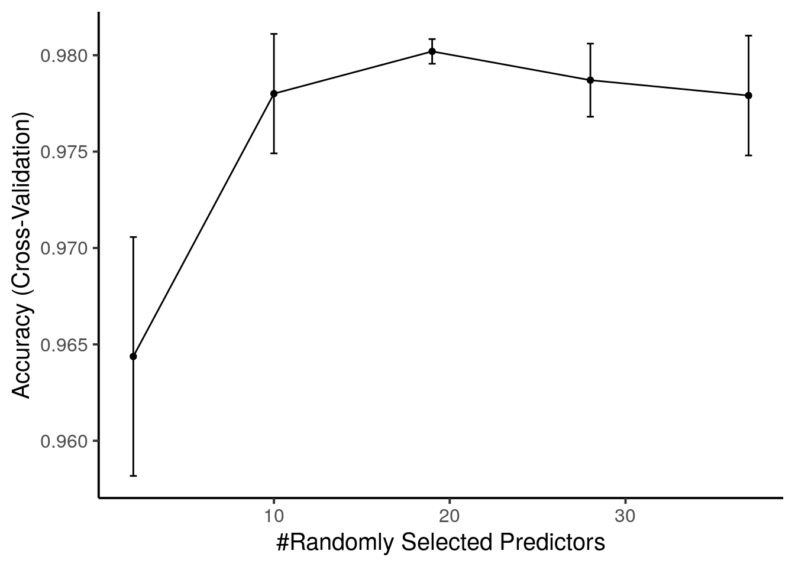
The best value for mtry is 19 and is used when predicting new data.
It is often recommended to visualize the variable importance of the classifier. The following plot specifies which variables (markers) are most important for classifying the data.

As expected, the markers that were used for gating (Ecad, CD3, CD20, HLADR, CD8a, CD38, FOXP3) were important for classification.
To assess the accuracy, sensitivity, specificity, among other quality measures of the classifier, we will now predict cell phenotypes in the test data.
# Select the arsinh-transformed counts of the test data
cur_mat <- t(assay(test_spe, "exprs")[rowData(test_spe)$use_channel,])
# Predict the cell phenotype labels of the test data
set.seed(231019)
cur_pred <- predict(rffit, newdata = cur_mat)While the overall classification accuracy can appear high, we also want
to check if each cell phenotype class is correctly predicted.
For this, we will calculate the confusion matrix between predicted and actual
cell labels. This measure may highlight individual cell phenotype classes that
were not correctly predicted by the classifier. When setting mode = "everything",
the confusionMatrix function returns all available prediction measures including
sensitivity, specificity, precision, recall and the F1 score per cell
phenotype class.
cm <- confusionMatrix(data = cur_pred,
reference = factor(test_spe$cell_labels),
mode = "everything")
cm## Confusion Matrix and Statistics
##
## Reference
## Prediction Bcell BnTcell CD4 CD8 Myeloid Neutrophil Plasma_cell Stroma
## Bcell 186 2 0 0 0 0 6 0
## BnTcell 4 423 1 0 0 0 0 0
## CD4 0 0 163 0 0 2 3 2
## CD8 0 0 0 199 0 0 8 0
## Myeloid 0 0 2 1 437 0 0 0
## Neutrophil 0 0 0 0 0 30 0 0
## Plasma_cell 1 0 3 2 0 0 158 0
## Stroma 0 0 2 0 0 0 0 108
## Treg 0 0 0 0 0 0 3 0
## Tumor 4 0 1 3 0 1 1 0
## Reference
## Prediction Treg Tumor
## Bcell 0 1
## BnTcell 0 1
## CD4 0 5
## CD8 0 3
## Myeloid 0 0
## Neutrophil 0 0
## Plasma_cell 1 0
## Stroma 0 0
## Treg 89 2
## Tumor 0 1487
##
## Overall Statistics
##
## Accuracy : 0.9806
## 95% CI : (0.9753, 0.985)
## No Information Rate : 0.4481
## P-Value [Acc > NIR] : < 2.2e-16
##
## Kappa : 0.9741
##
## Mcnemar's Test P-Value : NA
##
## Statistics by Class:
##
## Class: Bcell Class: BnTcell Class: CD4 Class: CD8
## Sensitivity 0.95385 0.9953 0.94767 0.97073
## Specificity 0.99714 0.9979 0.99622 0.99650
## Pos Pred Value 0.95385 0.9860 0.93143 0.94762
## Neg Pred Value 0.99714 0.9993 0.99716 0.99809
## Precision 0.95385 0.9860 0.93143 0.94762
## Recall 0.95385 0.9953 0.94767 0.97073
## F1 0.95385 0.9906 0.93948 0.95904
## Prevalence 0.05830 0.1271 0.05142 0.06129
## Detection Rate 0.05561 0.1265 0.04873 0.05949
## Detection Prevalence 0.05830 0.1283 0.05232 0.06278
## Balanced Accuracy 0.97549 0.9966 0.97195 0.98361
## Class: Myeloid Class: Neutrophil Class: Plasma_cell
## Sensitivity 1.0000 0.909091 0.88268
## Specificity 0.9990 1.000000 0.99779
## Pos Pred Value 0.9932 1.000000 0.95758
## Neg Pred Value 1.0000 0.999095 0.99340
## Precision 0.9932 1.000000 0.95758
## Recall 1.0000 0.909091 0.88268
## F1 0.9966 0.952381 0.91860
## Prevalence 0.1306 0.009865 0.05351
## Detection Rate 0.1306 0.008969 0.04723
## Detection Prevalence 0.1315 0.008969 0.04933
## Balanced Accuracy 0.9995 0.954545 0.94024
## Class: Stroma Class: Treg Class: Tumor
## Sensitivity 0.98182 0.98889 0.9920
## Specificity 0.99938 0.99846 0.9946
## Pos Pred Value 0.98182 0.94681 0.9933
## Neg Pred Value 0.99938 0.99969 0.9935
## Precision 0.98182 0.94681 0.9933
## Recall 0.98182 0.98889 0.9920
## F1 0.98182 0.96739 0.9927
## Prevalence 0.03288 0.02691 0.4481
## Detection Rate 0.03229 0.02661 0.4445
## Detection Prevalence 0.03288 0.02810 0.4475
## Balanced Accuracy 0.99060 0.99368 0.9933To easily visualize these results, we can now plot the true positive rate (sensitivity) versus the false positive rate (1 - specificity). The size of the point is determined by the number of true positives divided by the total number of cells.
library(tidyverse)
data.frame(cm$byClass) %>%
mutate(class = sub("Class: ", "", rownames(cm$byClass))) %>%
ggplot() +
geom_point(aes(1 - Specificity, Sensitivity,
size = Detection.Rate,
fill = class),
shape = 21) +
scale_fill_manual(values = metadata(spe)$color_vectors$celltype) +
theme_classic(base_size = 15) +
ylab("Sensitivity (TPR)") +
xlab("1 - Specificity (FPR)")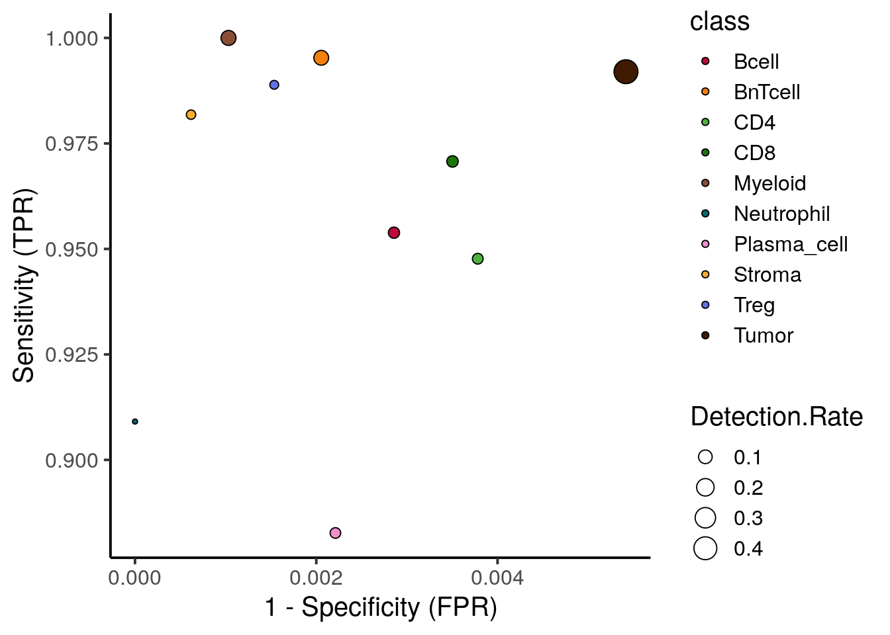
We observe high sensitivity and specificity for most cell types. Plasma cells show the lowest true positive rate with 88% being sufficiently high.
Finally, to observe which cell phenotypes were wrongly classified, we can visualize the distribution of classification probabilities per cell phenotype class:
set.seed(231019)
cur_pred <- predict(rffit,
newdata = cur_mat,
type = "prob")
cur_pred$truth <- factor(test_spe$cell_labels)
cur_pred %>%
pivot_longer(cols = Bcell:Tumor) %>%
ggplot() +
geom_boxplot(aes(x = name, y = value, fill = name), outlier.size = 0.5) +
facet_wrap(. ~ truth, ncol = 1) +
scale_fill_manual(values = metadata(spe)$color_vectors$celltype) +
theme(panel.background = element_blank(),
axis.text.x = element_text(angle = 45, hjust = 1))
The boxplots indicate the classification probabilities per class. The classifier is well trained if classification probabilities are only high for the one specific class.
9.3.6 Classification of new data
In the final section, we will now use the tuned and tested random forest classifier to predict the cell phenotypes of the unlabeled data.
First, we predict the cell phenotypes and extract their classification probabilities.
# Select the arsinh-transformed counts of the unlabeled data for prediction
cur_mat <- t(assay(unlab_spe, "exprs")[rowData(unlab_spe)$use_channel,])
# Predict the cell phenotype labels of the unlabeled data
set.seed(231014)
cell_class <- as.character(predict(rffit,
newdata = cur_mat,
type = "raw"))
names(cell_class) <- rownames(cur_mat)
table(cell_class)## cell_class
## Bcell BnTcell CD4 CD8 Myeloid Neutrophil
## 817 979 3620 2716 6302 559
## Plasma_cell Stroma Treg Tumor
## 2692 4904 1170 10641# Extract prediction probabilities for each cell
set.seed(231014)
cell_prob <- predict(rffit,
newdata = cur_mat,
type = "prob")Each cell is assigned to the class with highest probability. There are however
cases, where the highest probability is low meaning the cell can not be uniquely
assigned to a class. We next want to identify these cells and label them as
“undefined”. Here, we select a maximum classification probability threshold
of 40% but this threshold needs to be adjusted for other datasets. The adjusted
cell labels are then stored in the SpatialExperiment object.
library(ggridges)
# Distribution of maximum probabilities
tibble(max_prob = rowMax(as.matrix(cell_prob)),
type = cell_class) %>%
ggplot() +
geom_density_ridges(aes(x = max_prob, y = cell_class, fill = cell_class)) +
scale_fill_manual(values = metadata(spe)$color_vectors$celltype) +
theme_classic(base_size = 15) +
xlab("Maximum probability") +
ylab("Cell type") +
xlim(c(0,1.2))## Picking joint bandwidth of 0.0238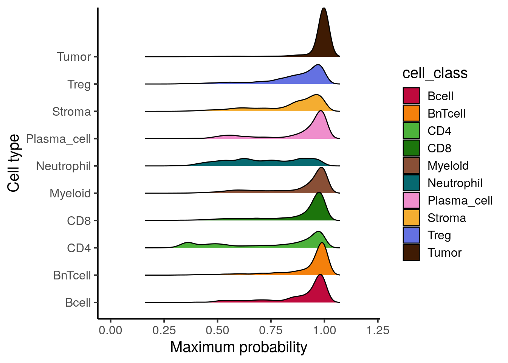
# Label undefined cells
cell_class[rowMax(as.matrix(cell_prob)) < 0.4] <- "undefined"
# Store labels in SpatialExperiment onject
cell_labels <- spe$cell_labels
cell_labels[colnames(unlab_spe)] <- cell_class
spe$celltype <- cell_labels
table(spe$celltype, spe$patient_id)##
## Patient1 Patient2 Patient3 Patient4
## Bcell 179 527 431 458
## BnTcell 416 586 594 1078
## CD4 391 1370 699 1385
## CD8 518 1365 479 1142
## Myeloid 1369 2197 1723 2731
## Neutrophil 348 9 148 176
## Plasma_cell 650 2122 351 274
## Stroma 633 676 736 3261
## Treg 553 409 243 310
## Tumor 5560 3334 5648 2083
## undefined 129 202 80 221We can now compare the cell labels derived by classification to the different clustering strategies. The first comparison is against the clustering results using the asinh-transformed counts.
tab1 <- table(spe$celltype,
paste("Rphenograph", spe$pg_clusters))
tab2 <- table(spe$celltype,
paste("SNN", spe$nn_clusters))
tab3 <- table(spe$celltype,
paste("SOM", spe$som_clusters))
pheatmap(log10(tab1 + 10), color = viridis(100))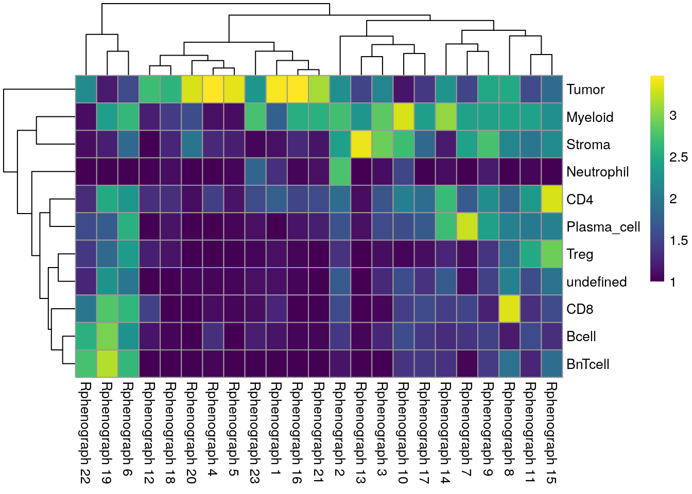
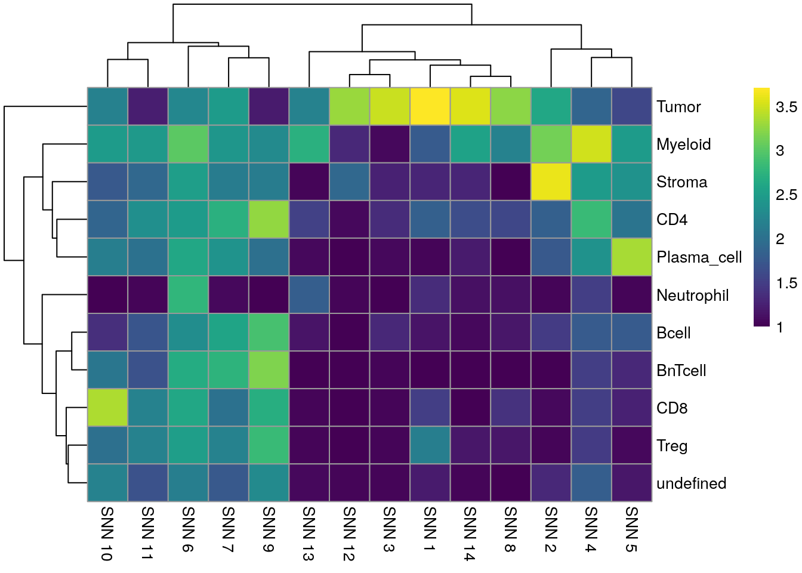

We can see that Tumor and Myeloid cells span multiple clusters while Neutrophiles are detected as an individual cluster by all clustering approaches.
We next compare the cell classification against clustering results using the integrated cells.
tab1 <- table(spe$celltype,
paste("Rphenograph", spe$pg_clusters_corrected))
tab2 <- table(spe$celltype,
paste("SNN", spe$nn_clusters_corrected))
tab3 <- table(spe$celltype,
paste("SOM", spe$som_clusters_corrected))
pheatmap(log10(tab1 + 10), color = viridis(100))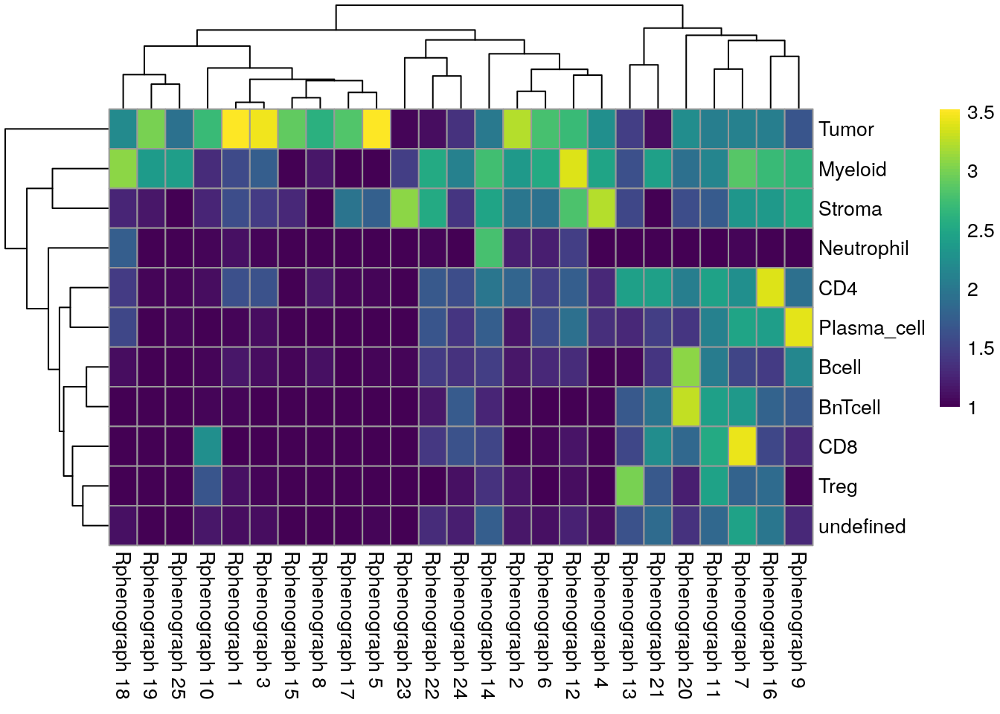


We observe a high agreement between the shared nearest neighbor clustering approach using the integrated cells and the cell phenotypes derived by classification.
In the next sections, we will highlight visualization strategies to verify the correctness of the phenotyping approach. Specifically, Section 11.2.3 shows how to outline identified cell phenotypes on composite images.
Finally, we save the updated SpatialExperiment object.
9.4 Session Info
SessionInfo
## R version 4.3.2 (2023-10-31)
## Platform: x86_64-pc-linux-gnu (64-bit)
## Running under: Ubuntu 22.04.3 LTS
##
## Matrix products: default
## BLAS: /usr/lib/x86_64-linux-gnu/openblas-pthread/libblas.so.3
## LAPACK: /usr/lib/x86_64-linux-gnu/openblas-pthread/libopenblasp-r0.3.20.so; LAPACK version 3.10.0
##
## locale:
## [1] LC_CTYPE=en_US.UTF-8 LC_NUMERIC=C
## [3] LC_TIME=en_US.UTF-8 LC_COLLATE=en_US.UTF-8
## [5] LC_MONETARY=en_US.UTF-8 LC_MESSAGES=en_US.UTF-8
## [7] LC_PAPER=en_US.UTF-8 LC_NAME=C
## [9] LC_ADDRESS=C LC_TELEPHONE=C
## [11] LC_MEASUREMENT=en_US.UTF-8 LC_IDENTIFICATION=C
##
## time zone: Etc/UTC
## tzcode source: system (glibc)
##
## attached base packages:
## [1] stats4 stats graphics grDevices utils datasets methods
## [8] base
##
## other attached packages:
## [1] testthat_3.2.1 ggridges_0.5.5
## [3] lubridate_1.9.3 forcats_1.0.0
## [5] stringr_1.5.1 purrr_1.0.2
## [7] readr_2.1.4 tidyr_1.3.0
## [9] tibble_3.2.1 tidyverse_2.0.0
## [11] caret_6.0-94 lattice_0.21-9
## [13] cytomapper_1.14.0 EBImage_4.44.0
## [15] dplyr_1.1.4 gridExtra_2.3
## [17] pheatmap_1.0.12 patchwork_1.1.3
## [19] ConsensusClusterPlus_1.66.0 kohonen_3.0.12
## [21] CATALYST_1.26.0 scran_1.30.0
## [23] scuttle_1.12.0 BiocParallel_1.36.0
## [25] bluster_1.12.0 viridis_0.6.4
## [27] viridisLite_0.4.2 dittoSeq_1.14.0
## [29] ggplot2_3.4.4 igraph_1.6.0
## [31] Rphenograph_0.99.1.9003 SpatialExperiment_1.12.0
## [33] SingleCellExperiment_1.24.0 SummarizedExperiment_1.32.0
## [35] Biobase_2.62.0 GenomicRanges_1.54.1
## [37] GenomeInfoDb_1.38.5 IRanges_2.36.0
## [39] S4Vectors_0.40.2 BiocGenerics_0.48.1
## [41] MatrixGenerics_1.14.0 matrixStats_1.2.0
##
## loaded via a namespace (and not attached):
## [1] bitops_1.0-7 RColorBrewer_1.1-3
## [3] doParallel_1.0.17 tools_4.3.2
## [5] backports_1.4.1 utf8_1.2.4
## [7] R6_2.5.1 HDF5Array_1.30.0
## [9] rhdf5filters_1.14.1 GetoptLong_1.0.5
## [11] withr_2.5.2 sp_2.1-2
## [13] cli_3.6.2 sandwich_3.1-0
## [15] labeling_0.4.3 sass_0.4.8
## [17] nnls_1.5 mvtnorm_1.2-4
## [19] randomForest_4.7-1.1 proxy_0.4-27
## [21] systemfonts_1.0.5 colorRamps_2.3.1
## [23] svglite_2.1.3 scater_1.30.1
## [25] parallelly_1.36.0 plotrix_3.8-4
## [27] limma_3.58.1 flowCore_2.14.0
## [29] generics_0.1.3 shape_1.4.6
## [31] gtools_3.9.5 car_3.1-2
## [33] Matrix_1.6-4 RProtoBufLib_2.14.0
## [35] waldo_0.5.2 ggbeeswarm_0.7.2
## [37] fansi_1.0.6 abind_1.4-5
## [39] terra_1.7-65 lifecycle_1.0.4
## [41] multcomp_1.4-25 yaml_2.3.8
## [43] edgeR_4.0.3 carData_3.0-5
## [45] rhdf5_2.46.1 recipes_1.0.9
## [47] SparseArray_1.2.3 Rtsne_0.17
## [49] grid_4.3.2 promises_1.2.1
## [51] dqrng_0.3.2 crayon_1.5.2
## [53] shinydashboard_0.7.2 beachmat_2.18.0
## [55] cowplot_1.1.2 magick_2.8.2
## [57] pillar_1.9.0 knitr_1.45
## [59] ComplexHeatmap_2.18.0 metapod_1.10.1
## [61] rjson_0.2.21 future.apply_1.11.1
## [63] codetools_0.2-19 glue_1.6.2
## [65] data.table_1.14.10 vctrs_0.6.5
## [67] png_0.1-8 gtable_0.3.4
## [69] cachem_1.0.8 gower_1.0.1
## [71] xfun_0.41 S4Arrays_1.2.0
## [73] mime_0.12 prodlim_2023.08.28
## [75] survival_3.5-7 timeDate_4032.109
## [77] iterators_1.0.14 cytolib_2.14.0
## [79] hardhat_1.3.0 lava_1.7.3
## [81] statmod_1.5.0 ellipsis_0.3.2
## [83] TH.data_1.1-2 ipred_0.9-14
## [85] nlme_3.1-163 rprojroot_2.0.4
## [87] bslib_0.6.1 irlba_2.3.5.1
## [89] svgPanZoom_0.3.4 vipor_0.4.7
## [91] rpart_4.1.21 colorspace_2.1-0
## [93] raster_3.6-26 nnet_7.3-19
## [95] tidyselect_1.2.0 compiler_4.3.2
## [97] BiocNeighbors_1.20.1 desc_1.4.3
## [99] DelayedArray_0.28.0 bookdown_0.37
## [101] scales_1.3.0 tiff_0.1-12
## [103] digest_0.6.33 fftwtools_0.9-11
## [105] rmarkdown_2.25 XVector_0.42.0
## [107] htmltools_0.5.7 pkgconfig_2.0.3
## [109] jpeg_0.1-10 sparseMatrixStats_1.14.0
## [111] highr_0.10 fastmap_1.1.1
## [113] rlang_1.1.2 GlobalOptions_0.1.2
## [115] htmlwidgets_1.6.4 shiny_1.8.0
## [117] DelayedMatrixStats_1.24.0 farver_2.1.1
## [119] jquerylib_0.1.4 zoo_1.8-12
## [121] jsonlite_1.8.8 ModelMetrics_1.2.2.2
## [123] BiocSingular_1.18.0 RCurl_1.98-1.13
## [125] magrittr_2.0.3 GenomeInfoDbData_1.2.11
## [127] Rhdf5lib_1.24.1 munsell_0.5.0
## [129] Rcpp_1.0.11 ggnewscale_0.4.9
## [131] pROC_1.18.5 stringi_1.8.3
## [133] brio_1.1.4 zlibbioc_1.48.0
## [135] MASS_7.3-60 plyr_1.8.9
## [137] listenv_0.9.0 parallel_4.3.2
## [139] ggrepel_0.9.4 splines_4.3.2
## [141] hms_1.1.3 circlize_0.4.15
## [143] locfit_1.5-9.8 ggpubr_0.6.0
## [145] ggsignif_0.6.4 pkgload_1.3.3
## [147] reshape2_1.4.4 ScaledMatrix_1.10.0
## [149] XML_3.99-0.16 drc_3.0-1
## [151] evaluate_0.23 tzdb_0.4.0
## [153] foreach_1.5.2 tweenr_2.0.2
## [155] httpuv_1.6.13 RANN_2.6.1
## [157] polyclip_1.10-6 future_1.33.1
## [159] clue_0.3-65 ggforce_0.4.1
## [161] rsvd_1.0.5 broom_1.0.5
## [163] xtable_1.8-4 e1071_1.7-14
## [165] rstatix_0.7.2 later_1.3.2
## [167] class_7.3-22 FlowSOM_2.10.0
## [169] beeswarm_0.4.0 cluster_2.1.4
## [171] timechange_0.2.0 globals_0.16.2